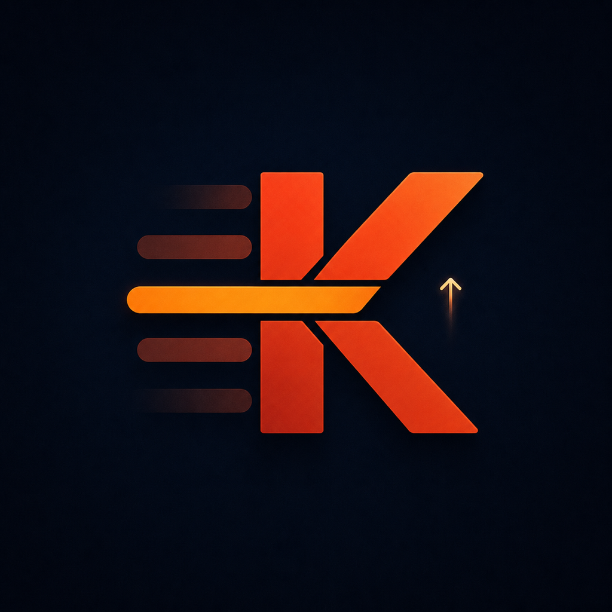
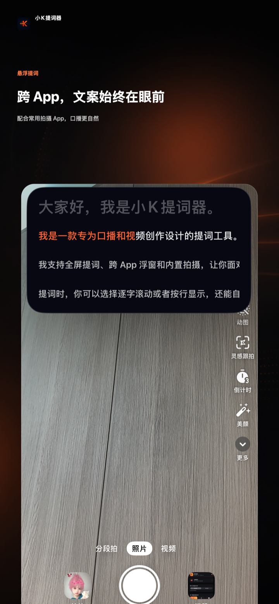
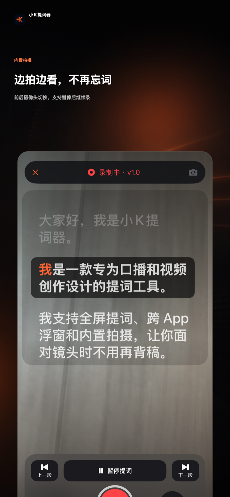
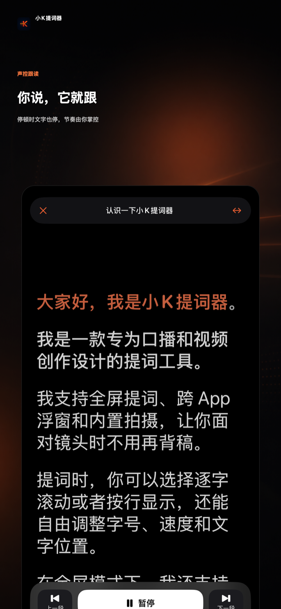
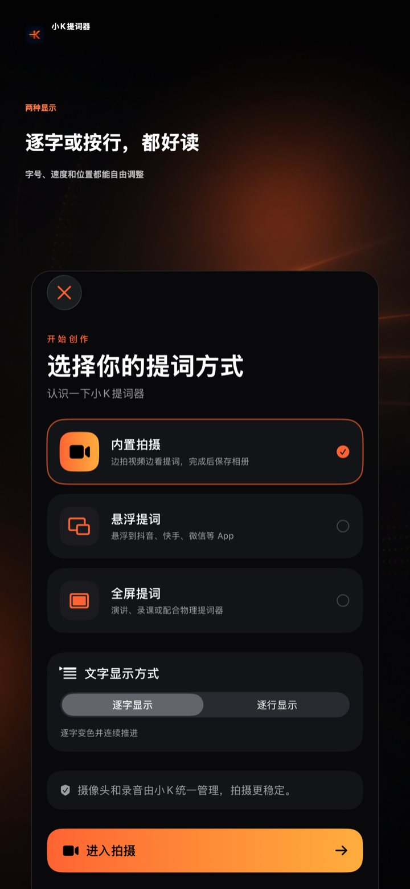
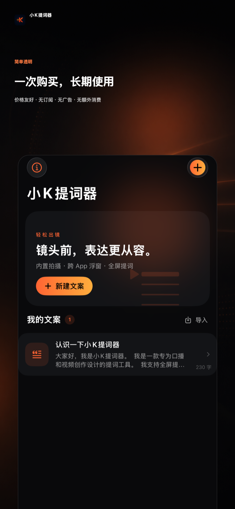

短视频口播
文案贴近镜头，眼神更自然，单人拍摄也能一次顺畅完成。

小K提词器 / KPrompt 前往 App StoreKPROMPT · NATIVE FOR IPHONE
专为口播与视频创作设计的原生提词工具。边拍边读、跨 App 浮窗、全屏演讲，一部 iPhone 就能轻松开讲。

让每一次开口都更自然
MADE FOR REAL MOMENTS
无论是一个人对着镜头，还是站在一群人面前，小K都能把准备好的内容放在正确的位置，让注意力回到表达本身。
文案贴近镜头，眼神更自然，单人拍摄也能一次顺畅完成。
长内容不再全靠记忆，用稳定的节奏完整讲清每一个知识点。
重点、数据和转场提前准备，台上表达从容、有条理。
THREE WAYS TO PROMPT
不必在多个工具之间反复切换。从准备文案到正式开拍，选择适合当下场景的模式即可。
内置拍摄
边看文案边录像，支持前后摄像头、倒计时、暂停与继续。完成后合并为一段视频，并保存到相册。

悬浮提词
先预览文案，再开启 iOS 画中画，切换到你使用的 App。浮窗可用系统控制播放或暂停，大小与位置由 iOS 管理。
全屏提词
专注的全屏阅读体验，可配合声控跟读或匀速滚动，让文字按你的节奏向前。


READ IT YOUR WAY
说话时推进，停顿时暂停。全屏提词在本机检测声音活动，不识别、转写或匹配说出的文字。
按你设定的速度平稳推进，适合节奏稳定的口播、录课和演讲。
自由切换逐字或逐行显示；英文按完整单词推进。每篇文案的字号、行距、段距与换行设置会用于实际提词。
SCRIPT LIBRARY
新建、编辑、置顶、删除文案，支持 TXT、RTF 与 DOCX 导入及 Word 导出。常用文案保存在设备本地，随时打开就能开始。

PRIVATE BY DESIGN
无需注册账户，不使用第三方分析或跟踪服务，也不会将你的文案、录音或视频上传到开发者服务器。
查看完整隐私政策 →BUILT FOR IOS
READY WHEN YOU ARE
现已上架 App Store。下载小K提词器，下一条视频就从现在开始。
下载应用App Store